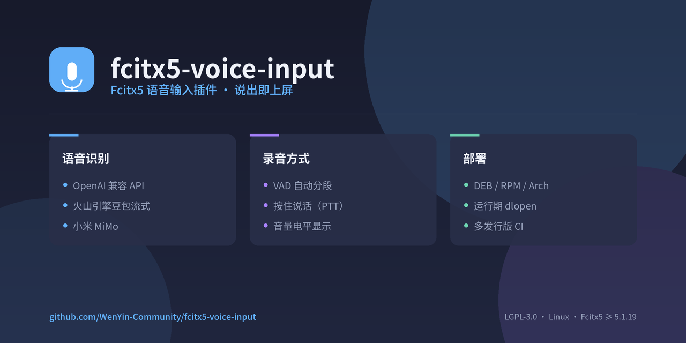

Fcitx5 语音输入插件 · 即说即得
在 Fcitx5 里用语音输入。VAD 自动检测说话并分段，识别结果直接上屏； 也可切换按住说话模式。支持 OpenAI 兼容 API、火山引擎豆包流式与小米 MiMo。
从 Releases
下载对应发行版的包，文件名带发行版标识（如
fcitx5-voice-input_0.4.2_amd64_ubuntu-24.04.deb）。
sudo apt install ./fcitx5-voice-input_*_ubuntu-24.04.deb # Ubuntu / Debian sudo dnf install ./fcitx5-voice-input-*_fedora-44.rpm # Fedora / openSUSE
使用 Releases 附件中的 PKGBUILD 与源码包构建。
# 把 PKGBUILD 与源码包下载到同一目录后 makepkg -si
fcitx5 -r -d
安装后在 fcitx5-configtool 的输入法列表中添加 Voice Input，
然后打开 Addon 配置 VoiceInput。下表「界面选项」即配置页中显示的名称。
| 界面选项 | 说明 | 默认值 |
|---|---|---|
| 当前 ASR 后端 | 选择后端；点齿轮按钮打开该后端的子配置页 | OpenAI 兼容 API |
| 录音模式 | VAD 自动分段（免按键） 或 按住热键说话（PTT） | VAD 自动分段 |
| 按住说话热键 | 按住期间录音，松开上屏（PTT 模式生效） | 右 Ctrl |
| 语音检测阈值 (%) | VAD 灵敏度，0–100，越高越不易触发 | 20 |
| 静音检测阈值 (毫秒) | 静音多久判定一段语音结束 | 800 |
| 预卷时长 (毫秒) | 说话开始前预取的音频 | 300 |
| 最长语音时长 (毫秒) | 超过此长度强制分段 | 30000 |
